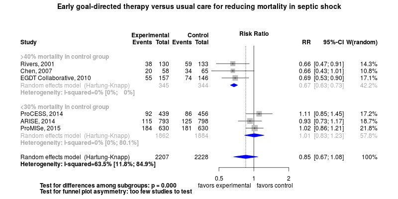
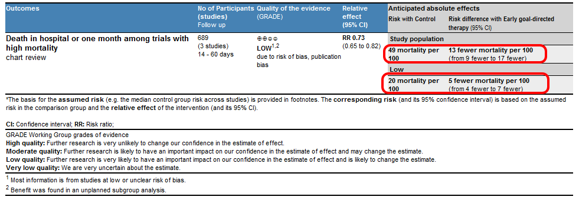

Clinical summary:
This meta-analysis suggests that the clinical intervention is effective in trials that have a high control rate mortality;
While accross all trials, the intervention is not effective however, meta-regression indicates that the benefit inversely correlates with the mortality rate in the control group.
Benefit also inversely correlates with year of publication and the rate of central venous catheter (CVC) use in the control groups.
The moderate heterogeneity was explained by variations in the mortality rate in the control groups of the trials (see meta-regression below) and the heterogeneity was 'moderate' after the rate of outcomes among controls was added to the meta-regression (residual I2 = 38%).
Accordingly, the three most recent trials both had less than 30% mortality in the control group, and the intervention did not reduce mortality.
The quality of evidence supporting benefit in trials with high mortality is low due to all trials being unblinded and the benefit being in a small number of subjects studied and an unplanned subgroup analysis.
We considered randomized controlled trials that the meta-analyses by Gu and Zhang identified as early-goal directed and additional trial(s) published subsequently.
Additional interpretations may be in the references in the 'Cited by' section below.
Reconciliation of summary with prior meta-analyses
Methods overview: Studies were abstacted into standardized tables of , and results. This repository updates a previously published meta-analysis.(1) Newer studies included are listed in the references. Rationale for newer trials excluded may be listed at the end of the references.
See methods for details.
Results: Details of the studies included are in the:
Below is the forest plot for the primary outcome. Additional Forest plots may be available.

The Summary of Findings Table (SoF) from the GRADE Profile is below (source files).

References:
Systematic review(s)
Most recent review(s) at time of last revision of this repository
- Rusconi AM, Bossi I, Lampard JG, Szava-Kovats M, Bellone A, Lang E. Early goal-directed therapy vs usual care in the treatment of severe sepsis and septic shock: a systematic review and meta-analysis. Intern Emerg Med. 2015 PMID: 25982917
- Angus DC, Barnato AE, Bell D, et al. A systematic review and meta-analysis of early goal-directed therapy for septic shock: the ARISE, ProCESS and ProMISe Investigators. Intensive Care Med. 2015 May 8. PMID: 25952825.
- Zhang L, Zhu G, Han L, Fu P. Early goal-directed therapy in the management of severe sepsis or septic shock in adults: a meta-analysis of randomized controlled trials. BMC Med. 2015 Apr 3;13(1):71. PMID: 25885654
- Gu WJ, Wang F, Bakker J, Tang L, Liu JC. The effect of goal-directed therapy on mortality in patients with sepsis - earlier is better: a meta-analysis of randomized controlled trials. Crit Care. 2014 Oct 20;18(5):570. PMID: 25327977; PMCID: PMC4232636.
- Wira CR, Dodge K, Sather J, Dziura J. Meta-analysis of Protocolized Goal-Directed Hemodynamic Optimization for the Management of Severe Sepsis and Septic Shock in the Emergency Department. West J Emerg Med. 2014 Feb;15(1):51-9. doi: 10.5811/westjem.2013.7.6828. PMID: 24696750; PMCID: PMC3952890.
Randomized controlled trials
New trial(s) not included in the most recent review above
- None
Trial(s) included
EGDT versus usual care
- Mouncey PR, Osborn TM, Power GS, et al; ProMISe Trial Investigators. Trial of Early, Goal-Directed Resuscitation for Septic Shock. N Engl J Med. 2015 Mar 17. [Epub ahead of print] PMID: 25776532.
- ARISE Investigators; ANZICS Clinical Trials Group, Peake SL, Delaney A, Bailey M, Bellomo R, Cameron PA, Cooper DJ, Higgins AM, Holdgate A, Howe BD, Webb SA, Williams P. Goal-directed resuscitation for patients with early septic shock. N Engl J Med. 2014 Oct 16;371(16):1496-506. doi: 10.1056/NEJMoa1404380. Epub 2014 Oct 1. PMID: 25272316.
- ProCESS Investigators, Yealy DM, Kellum JA, Huang DT, et al. A randomized trial of protocol-based care for early septic shock. N Engl J Med. 2014;370(18):1683-93. PMID: 24635773
- Chen ZQ, Jin YH, Chen H, Fu WJ, Yang H, Wang RT. [Early goal-directed therapy lowers the incidence, severity and mortality of multiple organ dysfunction syndrome]. Nan Fang Yi Ke Da Xue Xue Bao. 2007 Dec;27(12):1892-5. Chinese. PMID: 18159013
- Early Goal-Directed Therapy Collaborative Group of Zhejiang Province. [The effect of early goal-directed therapy on treatment of critical patients with severe sepsis/septic shock: a multi-center, prospective, randomized, controlled study]. Zhongguo Wei Zhong Bing Ji Jiu Yi Xue. 2010;22(6):331-4. PMID: 20594464
- Rivers E, Nguyen B, Havstad S, Ressler J, Muzzin A, Knoblich B, Peterson E, Tomlanovich M; Early Goal-Directed Therapy Collaborative Group. Early goal-directed therapy in the treatment of severe sepsis and septic shock. N Engl J Med. 2001;345(19):1368-77. PMID: 11794169
EGDT versus lactate-guided therapy
- Jones AE, Shapiro NI, Trzeciak S, Arnold RC, Claremont HA, Kline JA; Emergency Medicine Shock Research Network (EMShockNet) Investigators. Lactate clearance vs central venous oxygen saturation as goals of early sepsis therapy: a randomized clinical trial. JAMA. 2010;303(8):739-46. PMID: 20179283
- Wang T, Xia Y, Hao D, et al. [The significance of lactic acid in early diagnosis and goal-directed therapy of septic shock patients]. Zhonghua Wei Zhong Bing Ji Jiu Yi Xue. 2014;26(1):51-5. Chinese. PMID: 24649525.
- Yu B, Tian HY, Hu ZJ, et al. [Comparison of the effect of fluid resuscitation as guided either by lactate clearance rate or by central venous oxygen saturation in patients with sepsis]. Zhonghua Wei Zhong Bing Ji Jiu Yi Xue. 2013;25(10):578-83. doi:10.3760/cma.j.issn.2095-4352.2013.10.002. Chinese. PMID: 24119693.
- Tian HH, Han SS, Lv CJ, et al. [The effect of early goal lactate clearance rate on the outcome of septic shock patients with severe pneumonia]. Zhongguo Wei Zhong Bing Ji Jiu Yi Xue. 2012;24(1):42-5. Chinese. PMID: 22248751
Trials undergoing review
- None
Trials excluded - selected list of important trials
- Trial was terminated early: Andrews B, Muchemwa L, Kelly P, Lakhi S, Heimburger DC, Bernard GR. Simplified severe sepsis protocol: a randomized controlled trial of modified early goal-directed therapy in Zambia. Crit Care Med. 2014 Nov;42(11):2315-24. doi: 10.1097/CCM.0000000000000541. PMID: 25072757; PMCID: PMC4199893.
- Goals were not required within 6 hours: Wang XZ, Lü CJ, Gao FQ, Li XH, Yan WF, Ning FY. [Efficacy of goal-directed therapy in the treatment of septic shock]. Zhongguo Wei Zhong Bing Ji Jiu Yi Xue. 2006;18(11):661-4. PMID: 17092415
- Not randomized: He ZY, Gao Y, Wang XR, Hang YN. [Clinical evaluation of execution of early goal directed therapy in septic shock]. Zhongguo Wei Zhong Bing Ji Jiu Yi Xue. 2007;19(1):14-6. PMID: 17207356
- Could not isolate results for patients with sepsis: Chen ZQ, Jin YH, Chen H, Fu WJ, Yang H, Wang RT. [Early goal-directed therapy lowers the incidence, severity and mortality of multiple organ dysfunction syndrome]. Nan Fang Yi Ke Da Xue Xue Bao. 2007;27(12):1892-5. PMID: 18159013.
- Did not include goals for ScvO2: Lin SM, Huang CD, Lin HC, Liu CY, Wang CH, Kuo HP. A modified goal-directed protocol improves clinical outcomes in intensive care unit patients with septic shock: a randomized controlled trial. Shock. 2006;26(6):551-7. PMID: 17117128.
- Did not include goals for ScvO2: Tuchschmidt J, Fried J, Astiz M, Rackow E. Elevation of cardiac output and oxygen delivery improves outcome in septic shock. Chest. 1992;102(1):216-20. PMID: 1623756.
Funding for this review
- None.
Cited by
This repository is cited by:
- WikiDoc contributors. Goal-directed therapy. WikiDoc. Fef 24, 2015. Available at: http://www.wikidoc.org/index.php/Goal-directed_therapy. Accessed February 24, 2015.
{kind=link}
{kind=link}
{kind=link}